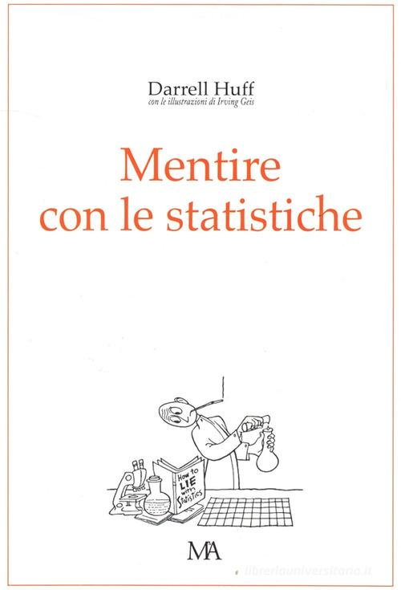

20:53 · 1 OPERA
Un quiz facile facile.
Il filo del discorso
Dr Divago propone un quiz basato su cartine degli Stati Uniti: chiede se i dati su casi e decessi consentano di riconoscere gli Stati che adottarono ordini di permanenza a casa. Il confronto fra valori assoluti e rapporti alla popolazione sostiene la sua critica delle restrizioni e dell’informazione sulla pandemia. Una digressione sul governo Draghi precede il ritorno alle mappe e alle differenze fra gli Stati. Il discorso passa poi alle cifre della mortalità tedesca e al problema delle convinzioni che resistono al confronto con i dati. La scheda ricostruisce l’argomentazione proposta; questi confronti descrittivi non dimostrano da soli gli effetti causali delle misure sanitarie.
I libri nel discorso

Mentire con le statistiche
Copertina: Monti & Ambrosini · Diogene · 2007 · curatori Giancarlo Livraghi e Riccardo Puglisi
Immagine autentica dell’opera, controllata visivamente; non identifica l’edizione usata nel video.
Il libro è richiamato con il titolo inglese How to Lie with Statistics e quello italiano, nel finale con una frase attribuita ad Artemus Ward; la paternità della frase non è qui verificata.
Passaggio 20:28 ↗ · Fonti e libro ↗Minutaggi ricavati da testi automatici, da riascoltare. Le identificazioni probabili sono segnalate accanto ai libri.